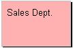
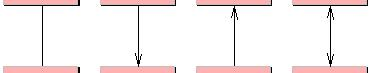
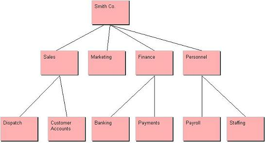

|
|
Hierarchy Chart
The Hierarchy chart tool is a very simple yet effective tool that
allows the modeling of hierarchical type structures. The tool only
enforces rules in terms of the hierarchical structure of the model,
allowing this particular tool to be used in both hard and soft systems
design. Each element within the hierarchy tool may also contain its own
data flow diagram, allowing
this tool to be used to model departments within an organization from an
abstract level.
To view the main multi-CASE help page click
here
|
|
|
|

Hierarchy Element
Definition: A hierarchy element is the only node type provided by the
hierarchy chart. This may be used to model any type of object which exists within
the hierarchy being modeled and therefore could represent items such as - staff
members in an organization, departments, sections within a plan or document
etc. A hierarchy element may contain an underlying dataflow
diagram or storyboard model that allows
for the definition of either processing activities or graphical user interface
requirements of element in question.
Representation: A hierarchy element is represented by a rectangular
node shape with a contained textual name. By default the rectangle is pink with
a black border. e.g.


Creation: A hierarchy element is added by right clicking on a
hierarchy chart diagram editor or the hierarchy chart icon within the project
tree and selecting the "Add Hierarchy Element " option from the menu. Position
the element outline where you wish it to be placed on the diagram and left
click, enter the name when prompted and click "OK".
Rules: An element can only be linked to one parent element. Once this
operation has been carried out the option to link to a parent is no longer
available.
Operations: Move Forwards/Backwards, Bring to Front, Send to Back,
Delete, Add Subordinate Element, Attach To Parent Element, Detach From Parent
Element, Create/View/Delete Underlying DFD, Change Element/Text Color and Edit
Element Annotation/Name.
Hierarchy Link
Definition: A hierarchy link is used to model a parent-child
relationship between two hierarchy elements. Links are
used to identify which elements are related to which other elements. They are
usually automatically created when subordinate elements are created, but can
also be manually added when an element is to be attached to a new parent.
Representation: Hierarchy links are represented by lines between
hierarchy elements. Links can be shown with no arrows, single arrows pointing
either way or double arrows. To change the appearance, right click the link and
select one of the four "Show As ..." options. The example below shows the
various representations of a hierarchy link.

Creation: Hierarchy links are created automatically when subordinate
elements are created and when an existing element is linked to a parent element.
To create a subordinate element right click on the element you want to be the
parent and select "Add Subordinate Element" from the menu. Left click when the
mouse is over the area you want the subordinate element to be positioned. A link
will be created as required. To link an element to a parent right click on the
element and select "Attach To Parent Element" from the menu. Left click the
element you want to become a parent and the link will be created.
Rules: A link must have different parent and child elements, i.e.
recursion is not permitted.
Operations: Move Forwards/Backwards, Bring to Front, Send to Back,
Add/Remove Link Point, Show As -----, Show As <----,
Show As ---->, Show
As <--->, Change Link
Color, Edit Link Annotation/Label.
Example
Below is an example of a Hierarchy Chart:
